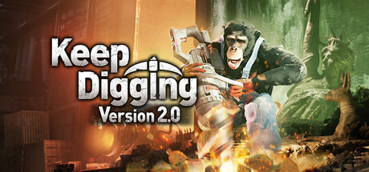

Keep Digging (Version 2.0)
Steam向けタイトル『Keep Digging』Version 2.0において、ゲームデザインおよびQAを担当。
- 担当
- ゲームデザイナー・QA
- 形式
- Steam向けマルチプレイ作品
- 範囲
- Version 2.0制作
- リンク
- Steamページ

▶ Steamページ
最大8人で地下世界を掘り進め、素材の回収や装備のクラフトを通してさらに深部を目指すマルチプレイ作品。
公開タイトルのアップデート制作への参加
公開タイトルのVersion 2.0制作に、ゲームデザインとQAの立場で参加しました。
公開タイトル制作
Version 2.0
ゲームデザイン
QA